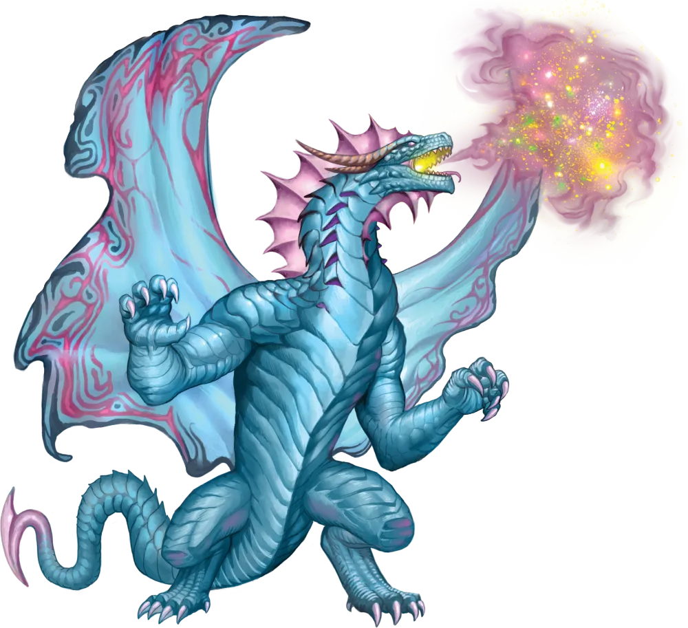

各年龄段数据卡
皮克精龙性情和悦善良，但骨子里依然透着一股顽皮劲儿。在所有被称作“仙灵龙”的龙族中，它们或许是最具代表性的一脉――友善开朗，热衷交谈与结伴同行。皮克精龙钟爱故事与歌谣，但没有什么比一则善意的笑话或恶作剧更能令它们欢欣雀跃了。与恶作剧以暴力残忍著称的诡谑龙截然不同，皮克精龙的宗旨是带来欢笑与乐趣――就连被捉弄的对象也能乐在其中。无论是肉体还是精神上的残忍与痛苦，都无法让它们感到半点快乐。 皮克精龙的鳞片呈现出丰富明艳的色彩，背后还生有绚丽夺目的蝴蝶双翼；每一头龙的翅纹都独一无二，飞行时还会洒落点点皮克精粉尘。尽管栖息环境会影响它们的大致色调，但世上没有两头皮克精龙长相完全相同，它们也从不融入周围环境进行伪装。相反，它们的体色往往与四周景致相映成趣，宛如艳丽花朵的花瓣或醒目飞鸟的羽衣。随着年龄增长，皮克精龙的鳞片与双翼会愈发流光溢彩，洒落的皮克精粉尘也会更加丰沛。皮克精龙天生就是要引人注目、成为全场焦点的――当一头皮克精龙想要隐入环境时，它们会直接施展魔法彻底隐去身形。 齐姆-齐米姆大多数皮克精龙都偏爱荒野与文明边缘地带，齐姆-齐米姆却在年少时因偶遇一头丑角龙而大受启发，立志成为著名的喜剧演员。如今，她穿梭于一座又一座城市之间，登台表演花样翻新的笑话与滑稽闹剧，令各地观众无不捧腹欢呼。然而，四处游历也让她见识到了文明世界的种种奢华享受，而真正引诱齐姆-齐米姆的并非美酒佳肴――她迷上了甜食，极易被精致的糖果、糕点与其他甜品勾走魂魄。这使得她在赶往演出现场的路上，常常忍不住在一家――甚至两家、三家、四家――烘焙坊前驻足流连，结果不可避免地在自己的演出上迟到。虽然齐姆-齐米姆乐于收下崇拜者赠送的礼物，也愿意承接私人专场演出，但少数试图利用她嗜甜的弱点来贿赂她、诱使她做违背本心之事的人，无一例外都撞上了这头巨龙严厉而不可动摇的决心。 皮克精龙会时刻留意被捉弄者的反应――无论是肢体语言还是口头回应――以确保自己不会造成过分的不快或情感伤害，并在不慎越界时及时致歉。年轻的皮克精龙尚未学会并非人人都能享受沦为恶作剧或笑话主角的滋味，因此比年长睿智的同族更容易看走眼，找错欣赏这份“关照”的对象。大多数成年皮克精龙都是洞悉人心的好手――不过所有皮克精龙在动手前，也都会先花时间观察拟定的目标。这种习惯再加上皮克精龙天生的好奇心与爱管闲事的性子，让它们落下了爱打听、爱传闲话的名声，只是远不及琥珀龙那般夸张罢了。平心而论，皮克精龙确实常在观察中捕捉到劲爆的秘闻轶事、摸清许多门道，但这些情报与日常作息本身对它们毫无意义――它们之所以观察，纯粹是为了打磨笑话与恶作剧的品质，并挑选出最合适、最富热情（且乐意配合）的目标。 皮克精龙天性爱好和平，不喜愤怒或暴力的正面冲突，更倾向于凭借人格魅力、三寸不烂之舌与乐观积极的态度彻底化解干戈。不过，当战斗找上门来时，它们往往更愿意用心灵魔法、欢愉吐息和神奇的皮克精粉尘来削弱敌人，而非让自己的利爪与尖牙沾上鲜血。倘若事态无足轻重，大多数皮克精龙干脆会彻底脱离争端，直接振翅飞走；若有必要，也会先隐去身形或制造一场骚乱转移视线，再抽身飞离。然而，一旦家园或挚友身陷险境，哪怕是最富利他精神的皮克精龙也会鼓起勇气坚守阵地，痛痛快快地将敌人狠揍一顿。 喜剧的政治居住在大城市中或其周边的皮克精龙，往往会将笑话的矛头对准周围那个令它们感到困惑、不公或荒诞脱节的世界。时尚潮流、阶层分化、仇恨、偏见、成见、社会禁忌，当然还有政治，都在它们的幽默创作中占据着重要分量。贵族与政客是它们笑话中最常见的题材与靶子。虽然许多人将这类戏谑一笑了之，视作无伤大雅的轻佻玩笑――毕竟，一头爱耍宝的皮克精龙又懂什么国家政治呢？可皮克精龙聪明得很，它们挑选恶作剧目标时向来有的放矢。许多都市皮克精龙深知喜剧是对周遭世界的针砭与评述，因此希望借由自己的喜剧，将那些常被忽视与掩盖的行径公之于众，从而为家园带来积极的改变。 皮克精龙栖息在繁花似锦、林木葱茏的自然天地中，例如田园诗般的林间空地、草甸或清泉畔。它们普遍不喜欢城市区域，身处封闭空间时也会感到局促不安。许多皮克精龙都是狂热的园艺家，悉心培育五彩斑斓的花卉与甘甜可口的果树，并将四周的枝叶修剪引导成赏心悦目的造型与布局。它们钟爱甜食与怡人芬芳，认为糖果、糕点与香水的存在堪称都市生活中最诱人的几大亮点。皮克精龙的领地极易辨认，因为绝大多数物体表面都轻洒着一层闪闪发亮的皮克精粉尘。 闪耀宝库皮克精龙酷爱鲜艳的色彩、璀璨的光芒与生动的纹样，它们挑选收入宝库的藏品也往往具备这些特质。闪亮的小饰物、绚丽的玻璃制品、五彩斑斓的奇石、擦拭得锃亮的钱币，以及纹饰繁复的织物与挂毯，通常构成了皮克精龙宝库的主体；名贵珠宝与魔法物品也颇为常见。一些远离都市中心的皮克精龙则会转而培育一座生机盎然的活体花园，将心爱的珍宝掩映在枝叶花丛之间，或是在泥土上镶嵌成精巧繁复的马赛克拼图。 神秘陌客拉坎西酒馆阴暗角落里怂恿你接下一桩可疑委托的男子；向你招手示意靠近、在耳畔低语一句足以颠覆你全部认知的秘密的女子；用吠叫声将你引向风暴酝酿现场的野狗――这一切乃至更多身影，都可能是“神秘陌客”拉坎西千变万化的伪装之一。 身为太古皮克精龙，拉坎西热衷于策划比年轻同族复杂得多的恶作剧。在“神秘陌客”看来，肢体闹剧、当众出丑或其他粗浅的搞笑形式未免太过幼稚浅薄；如今的拉坎西转而投身于辛辣的讽刺剧――其剧情如剥洋葱般层层揭开，每一层都浸透着酣畅淋漓的各色反讽：言语反讽，即拉坎西的话语表里不一、暗藏真意；戏剧反讽，即拉坎西凭借自己掌握而听众一无所知的隐情，做出在知情者看来格外滑稽而富有先见之明的举动与发言；以及命运反讽（或浪漫反讽），即登上拉坎西舞台的演员们受到命运或拉坎西本尊的阻挠，彻底失去对自身挣扎结局的掌控权。 总而言之，被希德与仙灵龙奉若神明的“命运”，本就是一股宏大的宇宙级反讽之力；因此，拉坎西开创的这种浸透反讽意味的新派讽刺剧深得命运欢心。借此，“神秘陌客”得以稳稳坐住标志性“诡计师”这一高难度角色，千变万化地混迹于自己挑选来参演下一幕剧目的各色“演员”之间，播撒混乱与无常。 当然，拉坎西在挑选潜在演员出演下一部讽刺剧时，可不会事先征求他们的同意；有些人――尤其是那些毫无幽默感、死板僵化的教条主义者――在发现竟有一头顽劣巨龙在摆弄自己的命运时，反应往往格外恶劣。这类扫兴的家伙最终或许会落得凄惨收场，恰如劝诫童话里的反面教材。反过来，对于那些学会自嘲、并愿意从讽刺喜剧的教训中反躬自省的人，“神秘陌客”通常会引导他们走向童话般的美满结局――而且收尾方式往往与先前的促狭闹剧首尾呼应、妙趣天成。 毕生一谑哪怕在其他仙灵龙当中，皮克精龙也是出类拔萃的恶作剧大师。它们不仅热衷于凡人种族偏爱的各类常规恶作剧，还独创了完全属于自己的恶作剧流派――这些杰作往往需要高超的魔法造诣、足以熬到包袱抖响的漫长寿命，有时甚至二者缺一不可。它们的一些恶作剧可能需要数十年乃至数百年才能迎来最终的笑点。一场耗费凡人一生光阴才揭晓谜底的玩笑，最终能酝酿出何等惊人的回报，实在令人遐想不已。而这类史诗级恶作剧一旦圆满上演，其传奇故事往往会在恶作剧者谢幕后依然流传千古，更曾激发过无数吟游诗人的叙事歌谣。 举例来说，拉坎西可能会精心编排一出浪漫喜剧：让两对即将步入婚姻殿堂的未婚伴侣在婚礼前夕横生枝节、意外频出，最终双双闹到分手。然而等到“神秘陌客”的剧本落幕之时，这四个人却会恍然发觉，倘若换一位伴侣共度余生，彼此都能过上更加充实美满的生活――于是互换伴侣之后，反而促成了两对更加幸福的佳偶。 身为太古龙，拉坎西在正面战斗中理论上危险到了极点，但他通常只会动用力量来彻底避开耳目与交锋，比起顶级掠食者，更像是一位顶级恶作剧大师。极少数能够揪出拉坎西行踪与真身的人，会收获“神秘陌客”一句赞赏的俏皮话，随后他便会施展五花八门的巨龙能力，潇洒地从舞台一侧退场。他更喜欢让自己的真身保持神秘，隐匿于世人视线之外。不过，倘若真有极少数强者拥有足以阻止拉坎西脱身的实力，那便值得他郑重相待――要是对方依然执意要求决一死战，“神秘陌客”便会收起标志性的随和笑意，毫无保留地全力迎战。 菲克斯芬作者：朱莉娅・多伊奇（Julia Deutsch） 被称作“精灵戏谑者”的菲克斯芬是一头拥有奇特身世的强大太古皮克精龙。她由两位父亲抚养长大――一位是皮克精龙，另一位则是拥有皮克精巨龙后嗣血脉的不死鸟；因此，身为皮克精龙的菲克斯芬继承了来自不死鸟父亲的显著特征，鳞片间夹杂着绚丽翎羽，并掌握着操控火焰与生命的神秘力量。早年间，菲克斯芬一家曾定居在一座精灵社区中，常年化作类人形态伪装成精灵生活。哪怕在数百年后的今天，那段经历依然塑造着她的世界观。她深谙凡人的思维方式――至少是精灵这类长寿凡人的心思――并借此将捉弄凡人的恶作剧艺术打磨得臻于化境。世上唯一比完美恶作剧更令她着迷的，便是凡人种族间耐人寻味的八卦秘闻或奇闻趣事。因此，虽然任何遇见她的人都免不了要被她捉弄一番，但若是能为她奉上一桩够味的情报――越香艳劲爆越好――或许就能免遭出丑，甚至赢得她的青睐。 春华王庭：达鲁迪的奇想 The Vernal Court: Darudy's Whimsy我当初选择从春华王庭踏入仙境绝非偶然――在我当时追查的几条线索中，那里显得最为安全。尽管如此，我依然庆幸自己作出了这个决定。统治此地的皮克精龙达鲁迪固然是个无可救药的恶作剧狂，但他同时也是一位真正开朗而讨喜的人物。他将每一天的每一刻都注满了纯粹的青春惊奇与欢欣，而他的情感也浸润着整座春华王庭，使这片天地处处明媚欢快，与我在仙境漫长旅途中造访过的其他一些王庭截然不同。 达鲁迪似乎拥有一种不可思议的分寸感，总能精准把握恶作剧的界限――这让被捉弄者要么跟着这头快活的皮克精龙一同放声大笑，最坏也不过是无奈地叹口气、带着温和的嗔怪翻个白眼；这或许正是他大获成功的关键所在。我必须强调，在这样一根钢丝上行走究竟有多么不易，哪怕他表现得举重若轻。 每个人都有各自的底线与幽默感，能够如此游刃有余地拿捏分寸，正是拥有极高情商的明证。那些想当然地认为恶作剧者尽是些轻浮、善变、不着调之徒的人，根本没能看清紧贴底线却从不越界所需的过人智慧。至少我自己就清楚得很――我原本以为自己会比实际经历的恼火得多呢。 ――永光贤者卡利赞德雷克斯 |
 皮克精龙 |